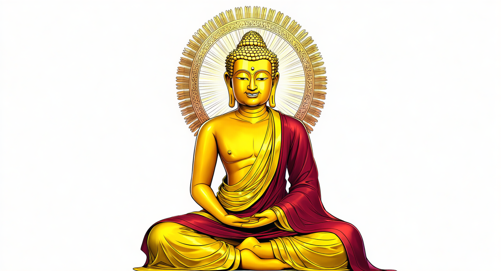
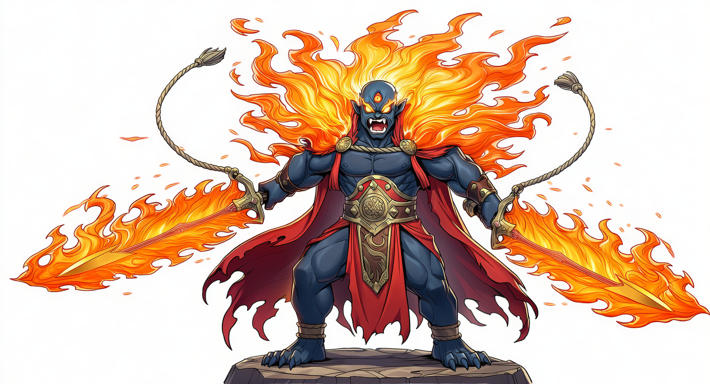
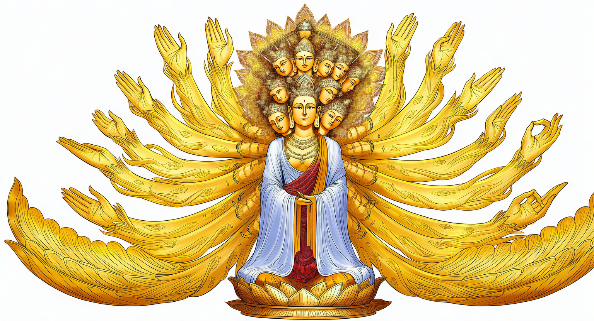
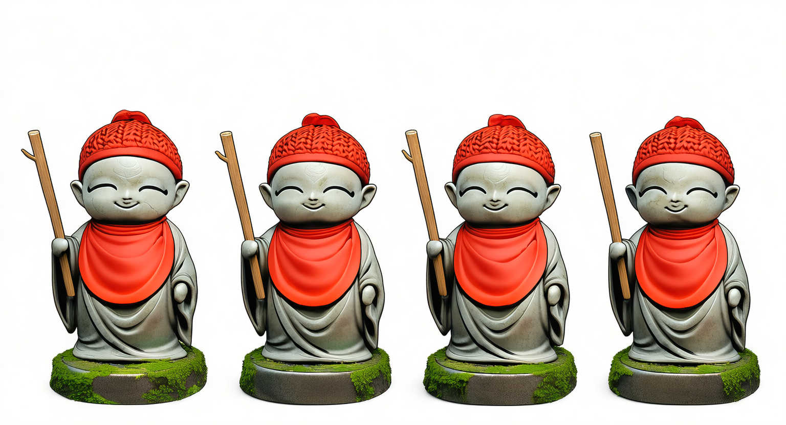

阿弥陀如来・釈迦如来・不動明王・観音菩薩・地蔵菩薩 ── 5仏が悟りを目指して競い合う、AIが本気で作った異色のコメディレース。煩悩を振り切って涅槃を目指せ。
💡 操作方法はゲーム内で表示されます / モバイル・PC両対応
仏像レース ～悟りへの道～は、5体の仏像が「悟り」を目指して走るコメディレースゲーム。煩悩アイテムや法力ブーストを駆使し、ライバル仏像を出し抜いて涅槃に至るのが目標です。
「仏像をモチーフにしたレースゲーム」というぶっ飛んだコンセプトは、AIだから1日で形になりました。深く考えず、ネタとして楽しんでください。
NovelAIで生成された個性豊かな仏像たち。それぞれが異なる特殊能力を持っています。

阿弥陀如来
不動明王
観音菩薩
地蔵菩薩このゲーム、実は1日で完成しました。使ったツールを紹介します（リンクから登録すると応援になります）。
このゲームをAIで作る過程をYouTubeで公開しています。プロンプトや工夫点も解説。
阿弥陀如来・釈迦如来・不動明王・観音菩薩・地蔵菩薩の5仏が悟りを目指して競うコメディレースゲームです。AIで制作されており、ブラウザで無料プレイできます。所要時間は約5〜10分。
不要です。ブラウザ上で動作するHTML5ゲームのため、URLを開くだけで即プレイできます。スマートフォン・PCの両方に対応しています。
ゲームロジックはClaude（Anthropic）、キャラクター画像はNovelAI、効果音は無料素材を組み合わせて制作されています。
1プレイ完結型のシンプル設計のため、セーブ機能はありません。スコアはローカルストレージに自動保存されます。